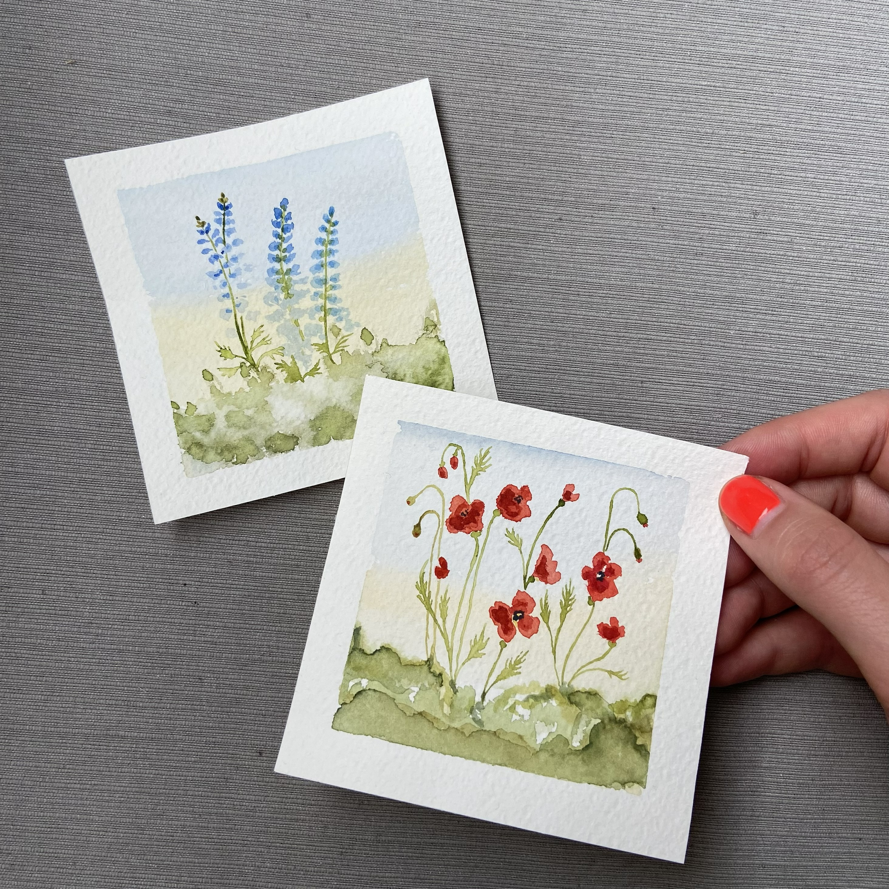
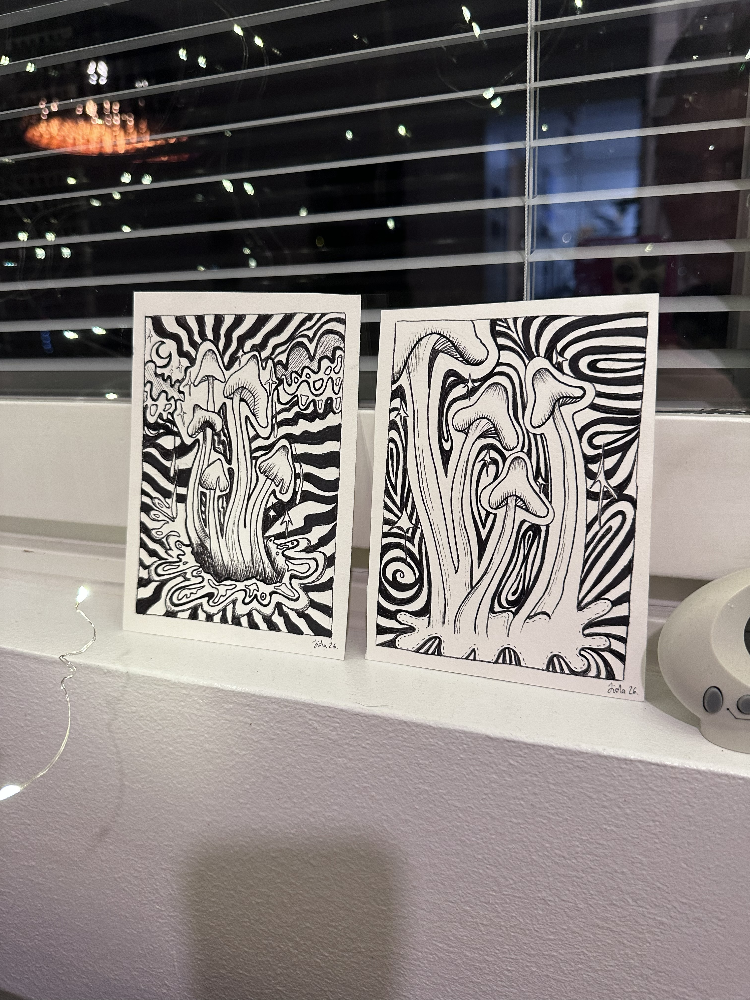

Yhdistän eri tekniikoita, kuten vesivärejä, akryylejä ja mustetta. Teen tilauksesta myös tussitöitä ja kalligrafiaa. Kysy lisää tilaustyön toteutuksesta!
Tekniikat
- Vesiväri, akryyli
- Kalligrafia musteella
- Tussityöt
Käsintehtyä taidetta tilauksesta
Julkaistu: 8.9.2026 | Kirjoittaja: Iida

Tutustu vesiväritöihin ja löydä lisää kuvia galleriasta.
Siirry galleriaanYhdistän eri tekniikoita, kuten vesivärejä, akryylejä ja mustetta. Teen tilauksesta myös tussitöitä ja kalligrafiaa. Kysy lisää tilaustyön toteutuksesta!
Voit selata kuvia kuvakarusellissa.
